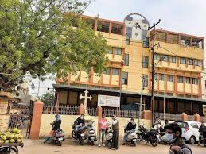

Personal Information
Full Name: Akash Gupta
Date of Birth: 12 June 2004
Place of Birth: Gujarat, India
Marital Status: Single
Contact Details
-
 Email:
akashgupta32710@gmail.com
Email:
akashgupta32710@gmail.com
-
 Phone: 780-830-9145
Phone: 780-830-9145
-
 Address:11064 106 Ave Grande Prairie, Alberta, Canada
Address:11064 106 Ave Grande Prairie, Alberta, Canada
Education
-
Computer Systems Technology Diploma – Northwestern Polytechnic (NWP)
2024-Present
-
Senior Secondary Education -MGM School,Gujarat, India
2020- 2022


Personal Skills & Qualities
- Good communication skills
- Responsible and reliable
- Willingness to learn new technologies
- Ability to work in a team
- Good time management
Professional Knowledge and Skills

I have developed a strong foundation in the key disciplines of Computer Systems Technology through academic study and practical lab work. My education has strengthened my understanding of both theory and real-world applications. I have gained hands-on experience with operating systems, network configurations, and troubleshooting hardware and software issues. Working on team projects has enhanced my problem-solving and collaboration skills, allowing me to contribute effectively in group settings. I am also familiar with programming languages like Java and C++, which I use to develop small applications and automate tasks. Continuous learning is important to me, and I actively explore new technologies to stay up-to-date with industry trends.
I have also developed strong analytical and critical thinking abilities, which help me approach complex problems methodically and find efficient solutions. My experience with debugging and system optimization has allowed me to improve the performance and reliability of projects I work on.
In addition, I am highly adaptable and open to learning new tools and frameworks, which enables me to quickly integrate into diverse technical environments. I am eager to apply my skills in real-world settings, contribute to meaningful projects, and continue growing as a technology professional.
- Programming Fundamentals: Experience with problem-solving techniques, basic algorithms, and structured programming using Java and C++.
- Web Development: Knowledge of HTML, CSS, and introductory JavaScript for building responsive and user-friendly web pages.
- Computer Systems: Understanding of operating system basics, hardware components, and fundamental system concepts.
Foreign Languages
- English: Fluent (academic and professional level).
- Hindi: Native proficiency.
- IELTS: Overall Band 6.5 – Received in 2023, India.